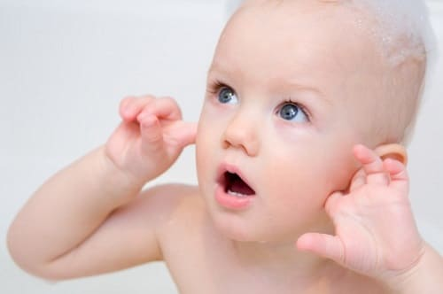

Ушные привески, также известные как ушные придатки, — безопасные врожденные аномалии развития. Они выглядят как маленькие свисающие лоскутки или шишечки, размером обычно с наконечник карандаша или немного больше. Лечение зависит от их размера. Если привесок свисает с мочки в виде лоскутка или на тонком стебельке, врач может обвязать ножку в самом узком месте хирургической нитью. Это прекратит кровоснабжение привеска, он станет меньше, и врач сможет безболезненно отрезать его. Если привесок маленький, но без ножки и расположен глубоко в слуховом проходе, то лучше оставить его в покое. Если привесок большой (больше, чем ластик на карандаше) и у него нет ножки, удаление (при желании) требует вмешательства хирурга. Это может быть сделано в любом возрасте.
Хотя ушные привески безопасны, статистически есть небольшая связь между наличием их и повышенной вероятностью аномалии развития почки. Поэтому иногда — при очень заметных привесках — ваш врач может порекомендовать УЗИ почек, чтобы исключить аномалию развития.
Здоровье ребенка от докторов Сирс / Сирс У. и др.